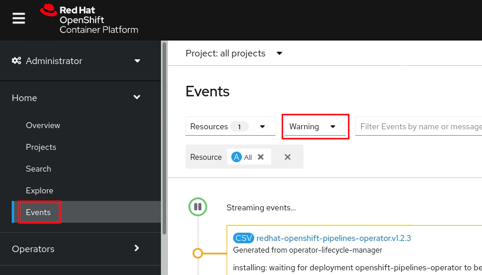

Lab: General OpenShift Health
This lab covers how to check whether an OpenShift environment is generally healthy.
Lab Requirements
- This lab requires that the user has
cluster-adminpermissions. If you do not, you must skip this lab.
Labs
Choose to perform the web console lab and/or the command line lab:
- Lab: Using the OpenShift Web Console to check cluster health
- Lab: Using the command line to check cluster health
Lab: Using the OpenShift Web Console to check cluster health
- Access your OpenShift web console at
https://console-openshift-console.$CLUSTER/. Replace$CLUSTERwith your OpenShift cluster domain. - After logging in, you should see the Administrator view:

- On the main Overview page, scroll down to the
Statusbox and ensure thatCluster,Control Plane, andOperatorsall show a green check mark. If they do not, there may be a fundamental issue with the cluster worth investigating. There may be a warning forInsightswhich is okay as it's not required. If there is an issue, clicking the hyperlink will show failure details.
- On the main Overview page, scroll down to the
Detailsbox and review theOpenShift version, and then scroll down to theCluster inventorybox and review the number of pods. If there are any known problematic pods, this will show a small exclamation icon and you can click the hyperlink for details on the failing pods.

- Next, scroll down to the
Cluster Utilizationbox. You can change the time frame in the top right, and it's often useful to useFilter by Node typenext to that to filter down to just worker or master nodes. Each section shows the total available (for example,43.19 available of 48means there are 48 total CPUs and 43.19 are available). Note that the graph y-axis is not scaled to the total available. The dashed yellow lines in the CPU and Memory sections are the sum of CPU and Memory pod requests (if specified) and it's normal for utilization to be above these lines. This may be due to pods using more than requests (up to specified limits) or requests/limits not being specified.
For each resource (e.g. CPU), click on the hyperlinked utilization number to get top consumers and switch to different groupings, e.g.By Nodeinstead ofBy Project:
- If you want to investigate resources further, on the left side, click Observe (or Monitoring in older versions of OpenShift) } Dashboards } Then click the dropdown and select
Node Exporter / USE Method / Cluster
- Next, review critical and warning alerts. On the left side, click Observe (or Monitoring in older versions of OpenShift) } Alerting } Then click
Filter, and checkCriticalandWarning

- Next, review recent warning and error events: On the left side, click Home } Events } Then change
All typestoWarning

Summary
In summary, this lab demonstrated how to check basic OpenShift health including cluster health, resource utilization, alerts, and events.
Optionally, you may perform the next lab to get similar information through the command line.
Lab: Using the command line to check cluster health
-
Review the overall cluster status and check if the
STATUScolumn has any errors.oc get clusterversionExample output:
NAME VERSION AVAILABLE PROGRESSING SINCE STATUS version 4.11.9 True False 39d Cluster version is 4.11.9 -
Get the status of cluster operators.
oc get clusteroperatorsExample output:
NAME VERSION AVAILABLE PROGRESSING DEGRADED SINCE MESSAGE authentication 4.11.9 True False False 3d6hIf any are
Degraded=True, then runoc describe clusteroperator $NAME. -
Review the status of nodes:
oc get nodesExample output:
NAME STATUS ROLES AGE VERSION master0.was-education-cluster Ready master 39d v1.24.0+dc5a2fd master1.was-education-cluster Ready master 39d v1.24.0+dc5a2fd master2.was-education-cluster Ready master 39d v1.24.0+dc5a2fd worker0.was-education-cluster Ready worker 39d v1.24.0+dc5a2fd worker1.was-education-cluster Ready worker 39d v1.24.0+dc5a2fd worker2.was-education-cluster Ready worker 39d v1.24.0+dc5a2fdIf any are
Status=NotReady, then you couldoc describe node $NODEand check theConditionsfor errors. -
Review node resource usage:
oc adm top nodesExample output:
NAME CPU(cores) CPU% MEMORY(bytes) MEMORY% master0.was-education-cluster 1002m 13% 10931Mi 75% master1.was-education-cluster 873m 11% 8603Mi 59% master2.was-education-cluster 1659m 22% 9231Mi 63% worker0.was-education-cluster 765m 10% 4146Mi 28% worker1.was-education-cluster 694m 9% 4009Mi 27% worker2.was-education-cluster 263m 3% 2868Mi 19% -
Review top pod CPU utilization.
oc adm top pods --sort-by=cpu --all-namespacesExample output:
NAMESPACE NAME CPU(cores) MEMORY(bytes) openshift-monitoring prometheus-k8s-1 355m 1779Mi [...] -
Review top pod memory utilization:
oc adm top pods --sort-by=memory --all-namespacesExample output:
NAMESPACE NAME CPU(cores) MEMORY(bytes) openshift-kube-apiserver kube-apiserver-master0.was-education-cluster 318m 3137Mi [...] -
Review critical and warning alerts (on Windows, you'll need to install something like Cygwin, etc.):
-
Critical alerts:
curl -k -H "Authorization: Bearer $(oc create token prometheus-k8s -n openshift-monitoring)" "https://$(oc -n openshift-monitoring get route alertmanager-main -o jsonpath='{.spec.host}')/api/v1/alerts?filter=severity=critical" -
Warning alerts:
curl -k -H "Authorization: Bearer $(oc create token prometheus-k8s -n openshift-monitoring)" "https://$(oc -n openshift-monitoring get route alertmanager-main -o jsonpath='{.spec.host}')/api/v1/alerts?filter=severity=warning"
-
-
Review recent warning and error events. This is particularly useful to find if OpenShift is killing application pods for some reason, health check probes are failing, etc.
oc get events --all-namespaces --sort-by='.lastTimestamp' --field-selector type=Warning -o custom-columns=FirstSeen:.firstTimestamp,LastSeen:.lastTimestamp,Count:.count,From:.source.component,Host:.source.host,Type:.type,Reason:.reason,ObjectKind:.involvedObject.kind,Object:.involvedObject.name,ObjectNamespace:.involvedObject.namespace,Message:.message -
Check a node for kernel errors or warnings (e.g. OOM killer):
-
List all the nodes:
oc get nodes -
Take a node name and start a debug pod. For example:
oc debug node/master0.was-education-cluster -t -
Wait for the
sh-4.4#prompt. -
Print the kernel log with a filter for errors:
chroot /host journalctl -p err | cat -
exit
-
-
List pods that have failed. It's okay if this output is blank and only shows output if there are active problems.
oc get pods --all-namespaces --field-selector=status.phase==FailedExample output:
NAMESPACE NAME READY STATUS RESTARTS AGE openshift-operator-lifecycle-manager collect-profiles-27859260-rxwq6 0/1 Error 0 29m -
List pods in a pending state. It's okay if this output is blank and only shows output if there are active problems.
oc get pods --all-namespaces --field-selector=status.phase==PendingExample output:
No resources found -
List pods in an unknown state. It's okay if this output is blank and only shows output if there are active problems.
oc get pods --all-namespaces --field-selector=status.phase==UnknownExample output:
No resources found -
Check for pods with a high restart count. Even if they are in a Running state, a high restart count might indicate underlying problems. The following example shows those with a restart count greater than 3. On Windows, you'll need to install something like Cygwin with the
jqutility. It's okay if this output is blank and only shows output if there are active problems.oc get pods --all-namespaces --field-selector=status.phase=Running -o json | jq '.items[]|select(any( .status.containerStatuses[]; .restartCount > 3))|.metadata.name'
Summary
In summary, this lab demonstrated how to check basic OpenShift health including cluster health, resource utilization, alerts, and events.